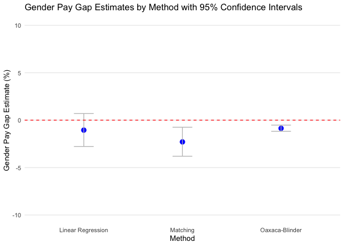

In today’s workplace, Diversity, Equity, and Inclusion (DEI) go beyond policies; they’re about ensuring everyone is treated and compensated fairly, regardless of gender, race, or other “protected” characteristics. A key measure of fair compensation is the gender pay gap (GPG), which identifies differences in average pay between men and women. With recent directives like the upcoming EU pay transparency regulation, companies are increasingly required to disclose pay data, which underscores the need for accurate and meaningful GPG reporting.
Many companies are now reporting their GPG in annual reports to the public. As such, accurately estimating the GPG is paramount, not only for compliance but also to maintain a reputable employer brand. Traditionally, this analysis might have been handled by finance teams, but as the scope of People Analytics grows, HR data experts are stepping into the field of GPG reporting. However, calculating and interpreting the GPG is complex, involving decisions on what factors to include or adjust for, to paint an accurate picture.
In this post, I’ll break down key metrics that help HR teams assess the GPG and highlight how certain analytical choices can impact the results. Plus, I’ll share some code to make implementing these calculations straightforward for your team.
Key Metrics for Gender Pay Gap Reporting
There are two main metrics often used to report on gender pay gaps: the Unadjusted Gender Pay Gap (UGPG) and the Adjusted Gender Pay Gap (AGPG).
Unadjusted Gender Pay Gap (UGPG): This is the difference in average pay between male and female employees, presented as a percentage of average male pay. The UGPG gives a high-level view of pay disparities without accounting for factors like job type or experience.
Adjusted Gender Pay Gap (AGPG): This metric is a deeper analysis that controls for factors like job role, experience, and other structural differences, allowing for a more direct comparison of pay between men and women in similar roles.
The AGPG can vary significantly based on the adjustments made, and determining what qualifies as “comparable positions” is key. Questions like, “What defines a comparable role?” and “Which factors should be adjusted for?” are critical for companies to consider when interpreting their GPG results. While the UGPG is more explicitly defined by EU directives, the AGPG lacks a standardized calculation method, often requiring customized models based on the specific organization.
A concrete GPG analysis example
The Data
For this post, I will be using the Glassdoor Gender Pay Gap data from Kaggle. This dataset includes 1,000 records of individual salaries, bonuses, job titles, and other attributes relevant to compensation.
Before calculating the UGPG and AGPG, it is crucial to examine characteristics such as age, performance, seniority, and education across genders. This initial exploration can reveal structural differences between groups and highlight areas that may need adjustment.
#| fig-width: 12#| fig-height: 10# Load necessary librarieslibrary(psych)library(GGally)library(oaxaca)# Remove any rows with missing datadf_clean <-na.omit(df)# Generate the ggpairs plot with boxplots and correlationspm <-ggpairs( df_clean[, c(8,3,4,7,5)], # Include the desired columnsmapping =aes(colour =as.factor(df_clean$Gender)), # Specify the color mapping heretitle ="Plots and Correlations for GlassDoor Data by Male and Female"# Optional: Add title )# Display the plotprint(pm)
In this plot, we see distributions and joint relationships between age, performance evaluation, seniority, and education. There are apparent differences across genders, suggesting that groups may not be fully comparable in all characteristics. We’ll address this issue further in the analysis.
Unadjusted Gender Pay Gap
The first step in analyzing the GPG would be calculating the average difference in pay between man and women, also called the Unadjusted Gender Pay gap. In our case we will be calculating this metric following the definition above which is \[
\text{UGPG} = \frac{\text{Avg. male earnings} - \text{Avg. female earnings}}{\text{Avg. male earnings}} \times 100\%
\]
avg_pay_men =mean(df[df['Gender'] =='Male', 'BasePay'])avg_pay_women =mean(df[df['Gender'] =='Female', 'BasePay'])GPG =round(((avg_pay_men-avg_pay_women)/avg_pay_men)*100,2)paste0("The Unadjusted Gender Pay Gap is = ", GPG, '')
the UGPG here is -8.65%, meaning women earn 8.65% less than men, on average. However, this simple metric doesn’t account for other pay-determining factors, such as job title or experience. The UGPG is a broad measure, which is why many companies also report AGPG.
Adjusted GPG
The AGPG can be seen as a refined UGPG, where individual characteristics are taken into account when comparing men and women differences in salary.
Linear regression
Linear regression is a simple yet effective method to calculate the AGPG. For our data we consider different variables that we expect to influence pay such as education, seniority, and performance, alongside gender.
#Salary variables are often skewed so we first log transform it to make it approximately normaldf_clean$BasePay_log =log(df_clean$BasePay)#The linear model requires to have the "grouping" variable dummified, here we have Men coded as 0 and Women coded as 1df_clean$Gender_fac =ifelse(df_clean$Gender =="Male", 0, 1)mod =lm('BasePay_log ~ Age + PerfEval + Education + Seniority + Dept + JobTitle + Gender_fac', df_clean)# Extract Gender Pay Gap. Note that we exponentiate the coefficient since oaxaca.results outcome is log-transformed, and we subtract 1 from it due to its dummy form. Then we multiply times 100 to bring it into percentageAGPGLM =round((exp(coef(mod)['Gender_fac'])-1)*100,2)paste0('AGPG based on linear regression =' ,AGPGLM)
Here, based on the linear regression results women are paid -1.05% less than men on average, after adjusting for individual characteristics. However, this linear model assumes that the impact of factors like seniority is identical for men and women, which might not capture true gender-specific effects.
The Oaxaca Blinder Decomposition
An approach that overcomes this linear regression limitation is the Oaxaca-Blinder Decomposition, which is statistical method that decomposes pay differences into explainable factors (differences in education or experience) and unexplainable factors (someone’s gender). Oaxaca-blinder fits different regression for men and women, thus allowing for gender-specific relationships between individual characteristics and pay.
# Load necessary librarieslibrary(OaxacaBlinder)library(boot)# Define the bootstrap functionoaxaca_gap_bootstrap <-function(data, indices) {# Resample the data df_resampled <- data[indices, ]# Perform Oaxaca-Blinder decomposition on the resampled data oaxaca_res <-OaxacaBlinderDecomp(formula = BasePay_log ~ Age + PerfEval + Education + Seniority + Dept + JobTitle | Gender_fac,data = df_resampled,type ="twofold",baseline_invariant =TRUE )# Extract the gender pay gap percentage pct_gap <- oaxaca_res$gaps$pct_gap *-1*100# Return the gapreturn(pct_gap)}# Run bootstrap with 1000 replicationsset.seed(123) # For reproducibilitybootstrap_results <-boot(data = df_clean, statistic = oaxaca_gap_bootstrap, R =100)# Calculate 95% CI for the gender pay gapgap_ci <-boot.ci(bootstrap_results, type ="perc")ci_ob = gap_ci$perc[4:5]AGPGOB =round(mean(bootstrap_results$t*-1),2)*-1# Display resultscat('AGPG based on Oaxaca-Blinder =', AGPGOB, "%\n")
AGPG based on Oaxaca-Blinder = -0.86 %
The Oaxaca-blinder results show that the AGPG is -0.86%, indicating that women earn, on average, 0.86% less than men. This model overcomes the linear regression limitation by allowing gender-specific relationships with pay.
An issue that is often overlooked by the Oaxaca-Blinder is that of group comparability. For instance, we coud have men in their early thirties with a specific job function (e.g., sales associate) and seniority but not women counterparts, and vice versa. This is a common situation since women may tend to concentrate in certain occupations for which specific skills are more likely to be found, whereas men may concentrate in other occupations (England et al. 2007). In the Oaxaca-blinder model there are no restrictions imposed on estimating earnings for male and female with comparable characteristics (Ñopo, 2004). This issue is also known as “common support” issue.
Matching
Matching addresses common support issues by pairing individuals with similar characteristics across gender groups, ensuring comparability.
Here, we use full matching to keep all observations in our small dataset while ensuring that each observation finds the closest comparable counterpart.
To do that, we first create a matched sample.
library(MatchIt)# Step 0: define formula for predicting genderformula_ipw ='Gender_fac ~ Age + PerfEval + Education + Seniority + Dept + JobTitle'# Step 1: Run the full-matching algorithmmatch =matchit(as.formula(formula_ipw), method ='full', data = df_clean,distance ='glm')
Then, we evaluate the similarity between the samples by looking at the standardized mean differences for each covariate between men and women. A well-balanced sample would reasult in mean differences close to 0.
# Checking balance after cem matchingsummary(match, un =FALSE)
As we can see, men and women are not fully comparable across all characteristics. For instance, we observe a negative and positive mean difference between men and women in the Administration Department and Sales Department, respectively.
Finally, we calculate the Adjusted GPG on this matched sample using a simple regression model.
df_out =match.data(match)# Step 2: Estimate the Treatment Effect with Weights obtained from matchingmod_matched <-lm(BasePay_log ~ Age + PerfEval + Education + Seniority + Dept + JobTitle + Gender_fac, data = df_out, weights = weights)# Step 3: Convert the Effect from Log Wage to Percentage# Extract the coefficient for femalefemale_coef <-coef(mod_matched)["Gender_fac"]AGPG_MLM <-round((exp(female_coef) -1) *100,2)cat("AGPG based on matched regression:", AGPG_MLM, "%\n")
AGPG based on matched regression: -2.29 %
#Create CIs for matchingci_mlm = (exp(confint(mod_matched)[21,])-1)*100
The matched approach results in an AGPG of -2.29%. This suggests that when controlling for comparable characteristics, women earn 2.29% less than men on average. Matching mitigates bias from non-comparable characteristics, offering an improved comparison between genders.
Comparing the results
Last but not least, one aspect often underlooked is that of confidence around the AGPG estimates. While it may be appealing for companies to report only point estimates, it should be essential to consider the statistical significance of these estimates in addition to the practical significance. That is, how certain can we be that the estimated AGPG actually differs from 0 (i.e., no gender pay gap)?
# Example estimates and 95% CIs for each methodmethods <-c("Linear Regression", "Matching", "Oaxaca-Blinder")estimates <-c(AGPGLM, AGPG_MLM, AGPGOB) # replace these with actual estimatesci_lowers <-c(ci_lm[1], ci_mlm[1], ci_ob[1]) # replace with actual lower CIsci_uppers <-c(ci_lm[2], ci_mlm[2], ci_ob[2]) # replace with actual upper CIs# Combine into a data framedf <-data.frame(Method = methods, Estimate = estimates, CI_Lower = ci_lowers, CI_Upper = ci_uppers)# Load ggplot2 for plottinglibrary(ggplot2)# Plottingggplot(df, aes(x = Method, y = Estimate)) +geom_point(color ="blue", size =3) +# Plot the point estimatesgeom_errorbar(aes(ymin = CI_Lower, ymax = CI_Upper), width =0.2, color ="gray") +# CI error barslabs(title ="Gender Pay Gap Estimates by Method with 95% Confidence Intervals",x ="Method", y ="Gender Pay Gap Estimate (%)") +theme_minimal() +theme(panel.grid.major.x =element_blank(), # Remove x-axis grid linespanel.grid.minor =element_blank()) +geom_hline(yintercept =0, linetype ="dashed", color ="red")+# Add a zero line for referenceylim(-10, 10)

In the plot above we show the AGPG estimates and their confidence intervals for each method. Note that only for Oaxaca-Blinder1 and linear regression after matching, we would conclude that the adjusted gender pay gap is statistically significant.
Conclusions
Analyzing the gender pay gap is more than a numbers game—it’s about understanding the complexities of workforce compensation and equity. In this post, we walked through the unadjusted and adjusted GPG metrics and explored three key approaches to AGPG calculation: simple linear regression, the Oaxaca-Blinder decomposition, and matching 2. Each method brings unique insights, from high-level overviews to more nuanced, comparable analyses.
In the end, there is no one-size-fits-all approach to GPG analysis; the choice of models and variables depends on your data, company structure, and the level of detail you’re seeking. But with transparent, carefully chosen methodologies, companies can offer reliable, impactful pay gap insights that can support real change and make concrete steps toward fair compensation.
Notes and references
Footnotes
Note that for the Oaxaca-Blinder the confidence intervals cannot be easily calculated. Thus, for this example, we bootstrapped them.↩︎
For a more comprehensive comparisons of approaches to estimate the adjusted gender pay gap you can consult (Strittmatter & Wunsch, 2021)↩︎